王红元
微博：coderwhy
微信：372623326


 内容概述
内容概述
认识webpack
webpack的安装
webpack的起步
webpack的配置
loader的使用
webpack中配置Vue
plugin的使用

搭建本地服务器

 什么是Webpack？
什么是Webpack？
什么是webpack？
这个webpack还真不是一两句话可以说清楚的。
我们先看看官方的解释：
At its core, webpack is a static module bundler for modern JavaScript applications.
从本质上来讲，webpack是一个现代的JavaScript应用的静态模块打包工具。
但是它是什么呢？用概念解释概念，还是不清晰。

我们从两个点来解释上面这句话：模块 和 打包
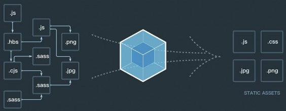

 前端模块化
前端模块化
前端模块化：
在前面学习中，我已经用了大量的篇幅解释了为什么前端需要
模块化。
而且我也提到了目前使用前端模块化的一些方案：AMD、
CMD、CommonJS、ES6。
在ES6之前，我们要想进行模块化开发，就必须借助于其他的
工具，让我们可以进行模块化开发。
并且在通过模块化开发完成了项目后，还需要处理模块间的各
种依赖，并且将其进行整合打包。
而webpack其中一个核心就是让我们可能进行模块化开发，并
且会帮助我们处理模块间的依赖关系。
而且不仅仅是JavaScript文件，我们的CSS、图片、json文件
等等在webpack中都可以被当做模块来使用（在后续我们会看
到）。

这就是webpack中模块化的概念。
理解了webpack可以帮助我们进行模块化，并
且处理模块间的各种复杂关系后，打包的概念就
非常好理解了。
就是将webpack中的各种资源模块进行打包合
并成一个或多个包(Bundle)。
并且在打包的过程中，还可以对资源进行处理，
比如压缩图片，将scss转成css，将ES6语法转成
ES5语法，将TypeScript转成JavaScript等等操
作。
但是打包的操作似乎grunt/gulp也可以帮助我
们完成，它们有什么不同呢？

 和grunt/gulp的对比
和grunt/gulp的对比
grunt/gulp的核心是Task
我们可以配置一系列的task，并且定义task要处理的事务（例如ES6、ts转化，图片压缩，scss转成css）
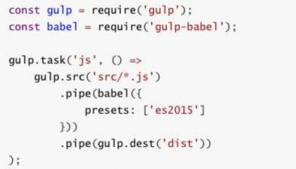
之后让grunt/gulp来依次执行这些task，而且让整个流程自动化。
所以grunt/gulp也被称为前端自动化任务管理工具。
我们来看一个gulp的task
下面的task就是将src下面的所有js文件转成ES5的语法。
并且最终输出到dist文件夹中。
什么时候用grunt/gulp呢？
如果你的工程模块依赖非常简单，甚至是没有用到模块化的概念。
只需要进行简单的合并、压缩，就使用grunt/gulp即可。
但是如果整个项目使用了模块化管理，而且相互依赖非常强，我们就可以使用更加强大的webpack了。
所以，grunt/gulp和webpack有什么不同呢？
grunt/gulp更加强调的是前端流程的自动化，模块化不是它的核心。

webpack更加强调模块化开发管理，而文件压缩合并、预处理等功能，是他附带的功能。

 webpack安装
webpack安装
安装webpack首先需要安装Node.js，Node.js自带了软件包管理工具npm
查看自己的node版本：
全局安装webpack(这里我先指定版本号3.6.0，因为vue cli2依赖该版本)
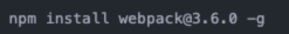
局部安装webpack（后续才需要）
--save-dev`是开发时依赖，项目打包后不需要继续使用的。
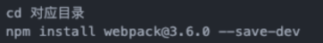
为什么全局安装后，还需要局部安装呢？
在终端直接执行webpack命令，使用的全局安装的webpack

当在package.json中定义了scripts时，其中包含了webpack命令，那么使用的是局部webpack

 准备工作
准备工作
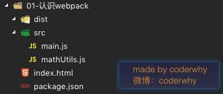
我们创建如下文件和文件夹：
dist文件夹：用于存放之后打包的文件
src文件夹：用于存放我们写的源文件
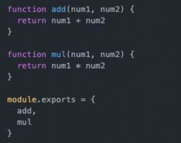
main.js：项目的入口文件。具体内容查看下面详情。
mathUtils.js：定义了一些数学工具函数，可以在其他地方
引用，并且使用。具体内容查看下面的详情。
index.html：浏览器打开展示的首页html
package.json：通过npm init生成的，npm包管理的文件（暂
时没有用上，后面才会用上）
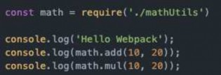
mathUtils.js文件中的代码：

main.js文件中的代码：

 js文件的打包
js文件的打包
现在的js文件中使用了模块化的方式进行开发，他们可以直接使用吗？不可以。
因为如果直接在index.html引入这两个js文件，浏览器并不识别其中的模块化代码。
另外，在真实项目中当有许多这样的js文件时，我们一个个引用非常麻烦，并且后期非常不方便对它们进行管理。
我们应该怎么做呢？使用webpack工具，对多个js文件进行打包。
我们知道，webpack就是一个模块化的打包工具，所以它支持我们代码中写模块化，可以对模块化的代码进行处理。（如
何处理的，待会儿在原理中，我会讲解）
另外，如果在处理完所有模块之间的关系后，将多个js打包到一个js文件中，引入时就变得非常方便了。

OK，如何打包呢？使用webpack的指令即可
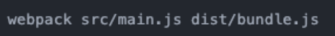
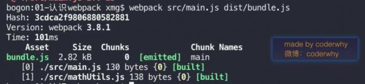

 使用打包后的文件
使用打包后的文件
打包后会在dist文件下，生成一个bundle.js文件
文件内容有些复杂，这里暂时先不看，后续再进行分析。

bundle.js文件，是webpack处理了项目直接文件依赖后生成的一个js文件，我们只需要将这个js文件在index.html中引入即
可
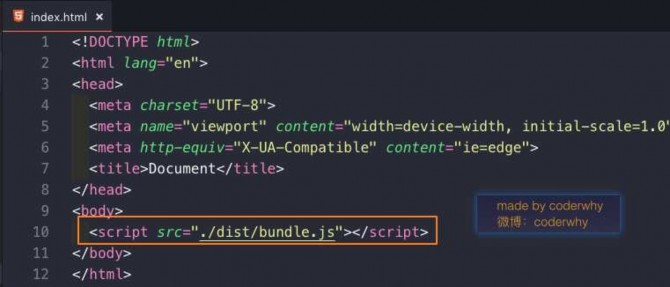 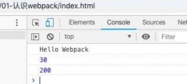

 入口和出口
入口和出口
我们考虑一下，如果每次使用webpack的命令都需要写上入口和出口作为参数，就非常麻烦，有没有一种方法可
以将这两个参数写到配置中，在运行时，直接读取呢？

当然可以，就是创建一个webpack.config.js文件
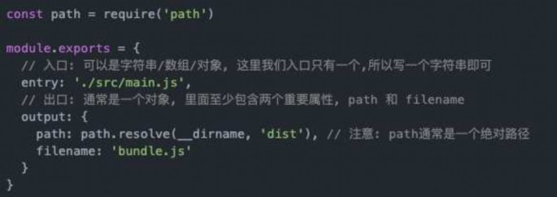

 局部安装webpack
局部安装webpack
目前，我们使用的webpack是全局的webpack，如果我们想使用局部来打包呢？
因为一个项目往往依赖特定的webpack版本，全局的版本可能很这个项目的webpack版本不一致，导出打包出现问题。
所以通常一个项目，都有自己局部的webpack。
第一步，项目中需要安装自己局部的webpack
这里我们让局部安装webpack3.6.0
Vue CLI3中已经升级到webpack4，但是它将配置文件隐藏了起来，所以查看起来不是很方便。

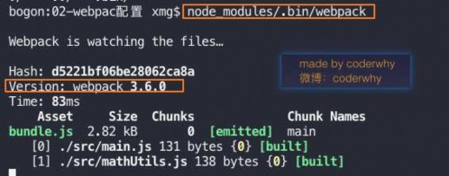
第二步，通过node_modules/.bin/webpack启动webpack打包
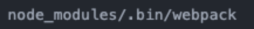

 package.json中定义启动
package.json中定义启动
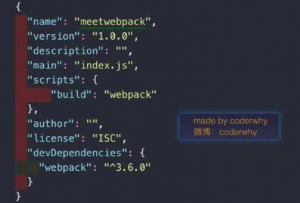
但是，每次执行都敲这么一长串有没有觉得不方便呢？
OK，我们可以在package.json的scripts中定义自己的
执行脚本。
package.json中的scripts的脚本在执行时，会按照一定的顺
序寻找命令对应的位置。
首先，会寻找本地的node_modules/.bin路径中对应的
命令。
如果没有找到，会去全局的环境变量中寻找。

如何执行我们的build指令呢？

 什么是loader？
什么是loader？
loader是webpack中一个非常核心的概念。
webpack用来做什么呢？
在我们之前的实例中，我们主要是用webpack来处理我们写的js代码，并且webpack会自动处理js之间相关的
依赖。
但是，在开发中我们不仅仅有基本的js代码处理，我们也需要加载css、图片，也包括一些高级的将ES6转成
ES5代码，将TypeScript转成ES5代码，将scss、less转成css，将.jsx、.vue文件转成js文件等等。
对于webpack本身的能力来说，对于这些转化是不支持的。
那怎么办呢？给webpack扩展对应的loader就可以啦。
loader使用过程：
步骤一：通过npm安装需要使用的loader
步骤二：在webpack.config.js中的modules关键字下进行配置

大部分loader我们都可以在webpack的官网中找到，并且学习对应的用法。

 css文件处理 - 准备工作
css文件处理 - 准备工作
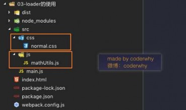
项目开发过程中，我们必然需要添加很多的样式，而样式我们往往
写到一个单独的文件中。
在src目录中，创建一个css文件，其中创建一个normal.css文
件。
我们也可以重新组织文件的目录结构，将零散的js文件放在一
个js文件夹中。
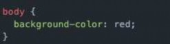
normal.css中的代码非常简单，就是将body设置为red
但是，这个时候normal.css中的样式会生效吗？
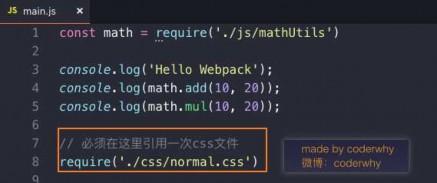
当然不会，因为我们压根就没有引用它。
webpack也不可能找到它，因为我们只有一个入口，webpack
会从入口开始查找其他依赖的文件。

在入口文件中引用：

 css文件处理 – 打包报错信息
css文件处理 – 打包报错信息
重新打包，会出现如下错误：
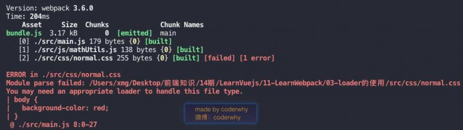

这个错误告诉我们：加载normal.css文件必须有对应的loader。

 css文件处理 – css-loader
css文件处理 – css-loader
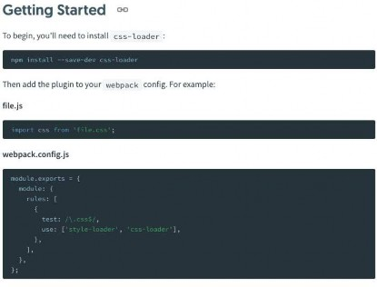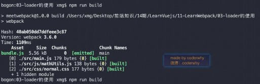
在webpack的官方中，我们可以找到如下关于样式的
loader使用方法：
按照官方配置webpack.config.js文件
注意：配置中有一个style-loader，我们并不知
道它是什么，所以可以暂时不进行配置。
重新打包项目：
但是，运行index.html，你会发现样式并没有生效。
原因是css-loader只负责加载css文件，但是并
不负责将css具体样式嵌入到文档中。

这个时候，我们还需要一个style-loader帮助我
们处理。

 css文件处理 – style-loader
css文件处理 – style-loader
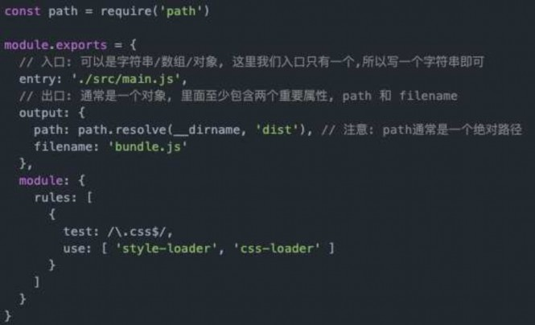
我们来安装style-loader
注意：style-loader需要放在css-
loader的前面。
疑惑：不对吧？按照我们的逻辑，在
处理css文件过程中，应该是css-
loader先加载css文件，再由style-
loader来进行进一步的处理，为什么
会将style-loader放在前面呢？
答案：这次因为webpack在读取使用
的loader的过程中，是按照从右向左
的顺序读取的。

目前，webpack.config.js的配置如下：

 less文件处理 – 准备工作
less文件处理 – 准备工作
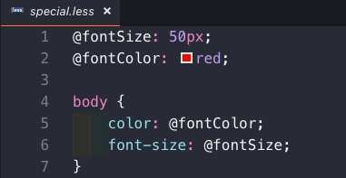
如果我们希望在项目中使用less、scss、stylus来写样式，
webpack是否可以帮助我们处理呢？
我们这里以less为例，其他也是一样的。

我们还是先创建一个less文件，依然放在css文件夹中
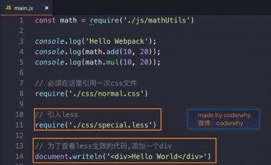 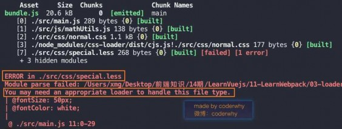

 less文件处理 – less-loader
less文件处理 – less-loader
继续在官方中查找，我们会找到less-loader相关的使用说明
首先，还是需要安装对应的loader
注意：我们这里还安装了less，因为webpack会使用less对less文件进行编译
其次，修改对应的配置文件

添加一个rules选项，用于处理.less文件
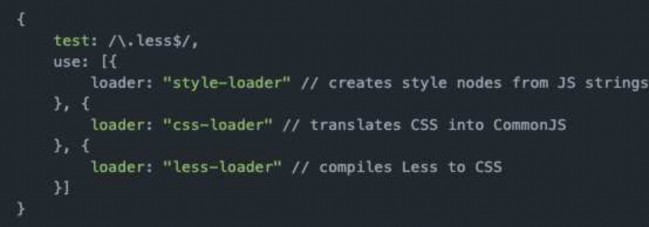

 图片文件处理 – 资源准备阶段
图片文件处理 – 资源准备阶段
首先，我们在项目中加入两张图片：
一张较小的图片test01.jpg(小于8kb)，一张较大的图片test02.jpeg(大于8kb)
待会儿我们会针对这两张图片进行不同的处理
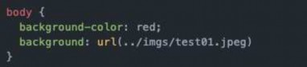
我们先考虑在css样式中引用图片的情况，所以我更改了normal.css中的样式：

如果我们现在直接打包，会出现如下问题
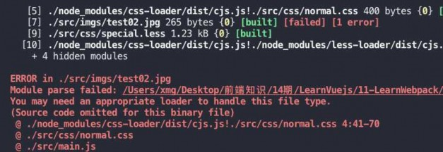

 图片文件处理 – url-loader
图片文件处理 – url-loader
图片处理，我们使用url-loader来处理，依然先安装url-loader
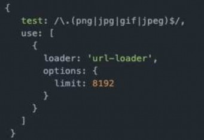
修改webpack.config.js配置文件：
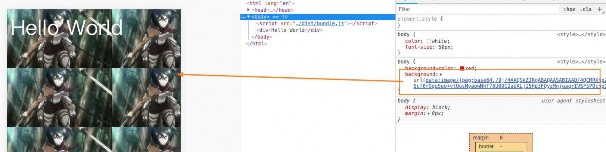
再次打包，运行index.html，就会发现我们的背景图片选出了出来。
而仔细观察，你会发现背景图是通过base64显示出来的

OK，这也是limit属性的作用，当图片小于8kb时，对图片进行base64编码

 图片文件处理 – file-loader
图片文件处理 – file-loader
那么问题来了，如果大于8kb呢？我们将background的图片改成test02.jpg
这次因为大于8kb的图片，会通过file-loader进行处理，但是我们的项目中并没有file-loader
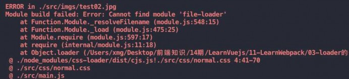
所以，我们需要安装file-loader
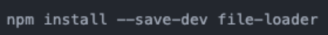

再次打包，就会发现dist文件夹下多了一个图片文件
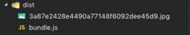

 图片文件处理 – 修改文件名称
图片文件处理 – 修改文件名称
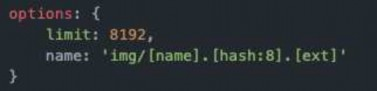
我们发现webpack自动帮助我们生成一个非常长的名字
这是一个32位hash值，目的是防止名字重复
但是，真实开发中，我们可能对打包的图片名字有一定的要求
比如，将所有的图片放在一个文件夹中，跟上图片原来的名称，同时也要
防止重复
所以，我们可以在options中添加上如下选项：
img：文件要打包到的文件夹
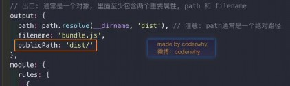
name：获取图片原来的名字，放在该位置
hash:8：为了防止图片名称冲突，依然使用hash，但是我们只保留8位
ext：使用图片原来的扩展名
但是，我们发现图片并没有显示出来，这是因为图片使用的路径不正确
默认情况下，webpack会将生成的路径直接返回给使用者

但是，我们整个程序是打包在dist文件夹下的，所以这里我们需要在路径下
再添加一个dist/

 ES6语法处理
ES6语法处理
如果你仔细阅读webpack打包的js文件，发现写的ES6语法并没有转成ES5，那么就意味着可能一些对ES6还不支持
的浏览器没有办法很好的运行我们的代码。
在前面我们说过，如果希望将ES6的语法转成ES5，那么就需要使用babel。
而在webpack中，我们直接使用babel对应的loader就可以了。
npm install --save-dev babel-loader@7 babel-core babel-preset-es2015
配置webpack.config.js文件
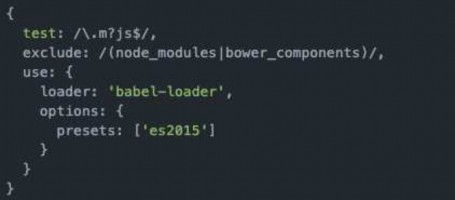

重新打包，查看bundle.js文件，发现其中的内容变成了ES5的语法

 引入vue.js
引入vue.js
后续项目中，我们会使用Vuejs进行开发，而且会以特殊的文件来组织vue的组件。
所以，下面我们来学习一下如何在我们的webpack环境中集成Vuejs
现在，我们希望在项目中使用Vuejs，那么必然需要对其有依赖，所以需要先进行安装
注：因为我们后续是在实际项目中也会使用vue的，所以并不是开发时依赖

那么，接下来就可以按照我们之前学习的方式来使用Vue了
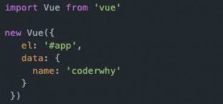 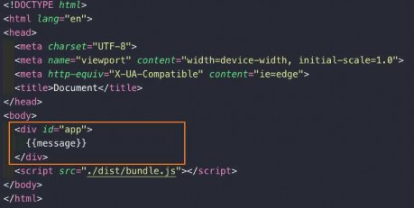

 打包项目 – 错误信息
打包项目 – 错误信息
修改完成后，重新打包，运行程序：
打包过程没有任何错误(因为只是多打包了一个vue的js文件而已)
但是运行程序，没有出现想要的效果，而且浏览器中有报错
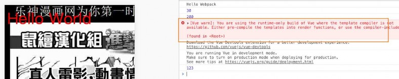
这个错误说的是我们使用的是runtime-only版本的Vue，什么意思呢？
这里我只说解决方案：Vue不同版本构建，后续我具体讲解runtime-only和runtime-compiler的区别。

所以我们修改webpack的配置，添加如下内容即可
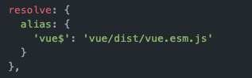

 el和template区别（一）
el和template区别（一）
正常运行之后，我们来考虑另外一个问题：
如果我们希望将data中的数据显示在界面中，就必须是修改index.html
如果我们后面自定义了组件，也必须修改index.html来使用组件
但是html模板在之后的开发中，我并不希望手动的来频繁修改，是否可以做到呢？
定义template属性：
在前面的Vue实例中，我们定义了el属性，用于和index.html中的#app进行绑定，让Vue实例之后可以管理它其中的内容
这里，我们可以将div元素中的{{message}}内容删掉，只保留一个基本的id为div的元素
但是如果我依然希望在其中显示{{message}}的内容，应该怎么处理呢？

我们可以再定义一个template属性，代码如下：
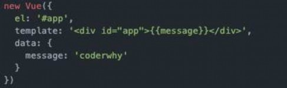

 el和template区别（二）
el和template区别（二）
重新打包，运行程序，显示一样的结果和HTML代码结构
那么，el和template模板的关系是什么呢？
在我们之前的学习中，我们知道el用于指定Vue要管理的DOM，可以帮助解析其中的指令、事件监听等等。
而如果Vue实例中同时指定了template，那么template模板的内容会替换掉挂载的对应el的模板。
这样做有什么好处呢？
这样做之后我们就不需要在以后的开发中再次操作index.html，只需要在template中写入对应的标签即可
但是，书写template模块非常麻烦怎么办呢？
没有关系，稍后我们会将template模板中的内容进行抽离。

会分成三部分书写：template、script、style，结构变得非常清晰。

 Vue组件化开发引入
Vue组件化开发引入
在学习组件化开发的时候，我说过以后的Vue开发过程中，我们都会采用组件化开发的思想。
那么，在当前项目中，如果我也想采用组件化的形式进行开发，应该怎么做呢？
查看下面的代码：

当然，我们也可以将下面的代码抽取到一个js文件中，并且导出。
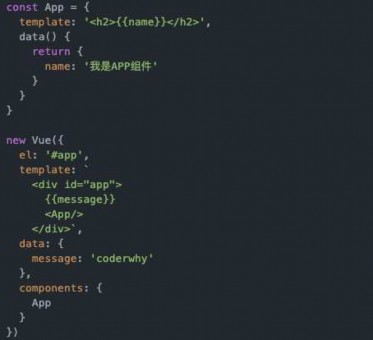 

 .vue文件封装处理
.vue文件封装处理
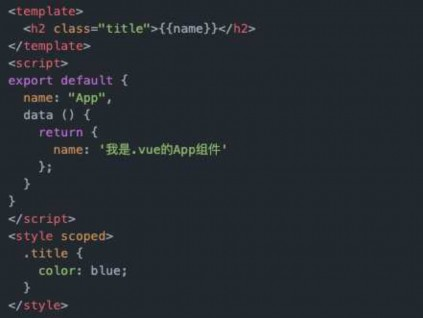
但是一个组件以一个js对象的形式进行组织和使用的时候是非常不方便的
一方面编写template模块非常的麻烦
另外一方面如果有样式的话，我们写在哪里比较合适呢？
现在，我们以一种全新的方式来组织一个vue的组件
但是，这个时候这个文件可以被正确的加载吗？
必然不可以，这种特殊的文件以及特殊的格式，必须有人帮助我们
处理。
谁来处理呢？vue-loader以及vue-template-compiler。
安装vue-loader和vue-template-compiler
npm install vue-loader vue-template-compiler --save-dev

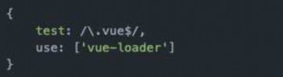
修改webpack.config.js的配置文件：

 认识plugin
认识plugin
plugin是什么？
plugin是插件的意思，通常是用于对某个现有的架构进行扩展。
webpack中的插件，就是对webpack现有功能的各种扩展，比如打包优化，文件压缩等等。
loader和plugin区别
loader主要用于转换某些类型的模块，它是一个转换器。
plugin是插件，它是对webpack本身的扩展，是一个扩展器。
plugin的使用过程：
步骤一：通过npm安装需要使用的plugins(某些webpack已经内置的插件不需要安装)
步骤二：在webpack.config.js中的plugins中配置插件。

下面，我们就来看看可以通过哪些插件对现有的webpack打包过程进行扩容，让我们的webpack变得更加好用。

 添加版权的Plugin
添加版权的Plugin
我们先来使用一个最简单的插件，为打包的文件添加版权声明
该插件名字叫BannerPlugin，属于webpack自带的插件。
按照下面的方式来修改webpack.config.js的文件：
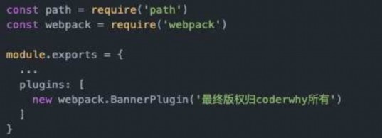

重新打包程序：查看bundle.js文件的头部，看到如下信息


 打包html的plugin
打包html的plugin
目前，我们的index.html文件是存放在项目的根目录下的。
我们知道，在真实发布项目时，发布的是dist文件夹中的内容，但是dist文件夹中如果没有index.html文件，那么打包的js
等文件也就没有意义了。
所以，我们需要将index.html文件打包到dist文件夹中，这个时候就可以使用HtmlWebpackPlugin插件
HtmlWebpackPlugin插件可以为我们做这些事情：
自动生成一个index.html文件(可以指定模板来生成)
将打包的js文件，自动通过script标签插入到body中
安装HtmlWebpackPlugin插件
npm install html-webpack-plugin --save-dev
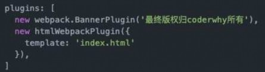
使用插件，修改webpack.config.js文件中plugins部分的内容如下：
这里的template表示根据什么模板来生成index.html
另外，我们需要删除之前在output中添加的publicPath属性

否则插入的script标签中的src可能会有问题

 js压缩的Plugin
js压缩的Plugin
在项目发布之前，我们必然需要对js等文件进行压缩处理
这里，我们就对打包的js文件进行压缩
我们使用一个第三方的插件uglifyjs-webpack-plugin，并且版本号指定1.1.1，和CLI2保持一致
npm install uglifyjs-webpack-plugin@1.1.1 --save-dev
修改webpack.config.js文件，使用插件：
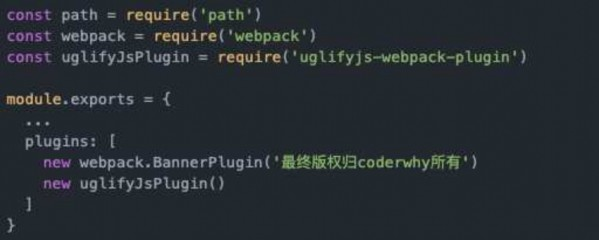

查看打包后的bunlde.js文件，是已经被压缩过了。

 搭建本地服务器
搭建本地服务器
webpack提供了一个可选的本地开发服务器，这个本地服务器基于node.js搭建，内部使用express框架，可以实
现我们想要的让浏览器自动刷新显示我们修改后的结果。
不过它是一个单独的模块，在webpack中使用之前需要先安装它
devserver也是作为webpack中的一个选项，选项本身可以设置如下属性：
contentBase：为哪一个文件夹提供本地服务，默认是根文件夹，我们这里要填写./dist
port：端口号
inline：页面实时刷新
historyApiFallback：在SPA页面中，依赖HTML5的history模式
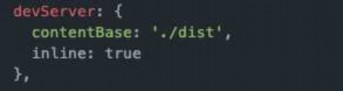
webpack.config.js文件配置修改如下：
我们可以再配置另外一个scripts：

--open参数表示直接打开浏览器
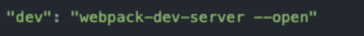